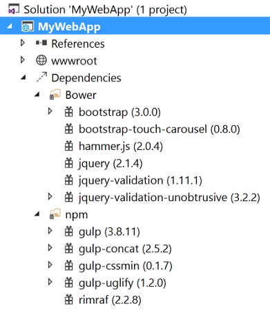
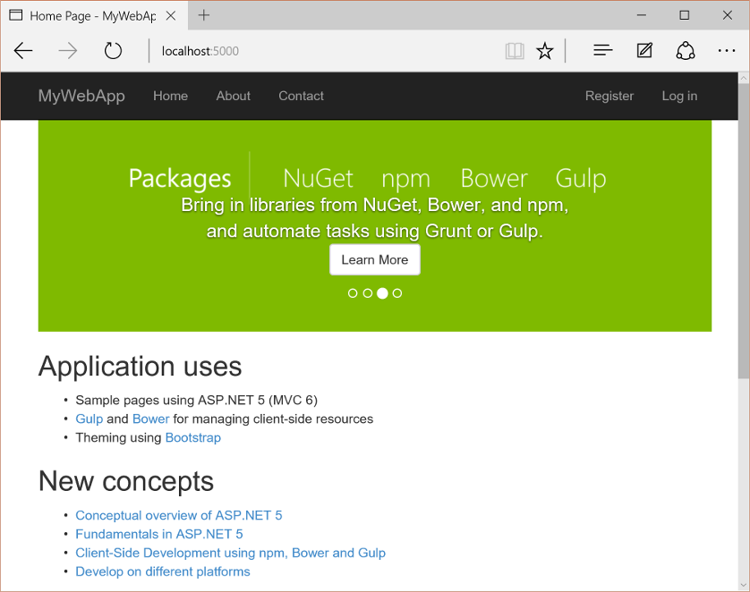

Building Projects with Yeoman¶
By Steve Smith, Scott Addie, Rick Anderson and Noel Rice
Yeoman generates complete projects for a given set of client tools. Yeoman is an open-source tool that works like a Visual Studio project template. The Yeoman command line tool yo works alongside a Yeoman generator. Generators define the technologies that go into a project.
Sections:
Install Node.js, npm, and Yeoman¶
To get started with Yeoman install Node.js. The installer includes Node.js and npm.
Follow the instructions on http://yeoman.io/learning/ to install yo, bower, grunt, and gulp.
npm install -g yo bower grunt-cli gulp
Note
If you get the error npm ERR! Please try running this command again as root/Administrator. on Mac OS, run the following command using sudo: sudo npm install -g yo bower grunt-cli gulp
From the command line, install the ASP.NET generator:
npm install -g generator-aspnet
Note
If you get a permission error, run the command under sudo as described above.
The –g flag installs the generator globally, so that it can be used from any path.
Create an ASP.NET app¶
Create a directory for your projects
mkdir src
cd src
Run the ASP.NET generator for yo
yo aspnet
The generator displays a menu. Arrow down to the Empty Web Application project and tap Enter:
Use “EmptyWeb1” for the app name and then tap Enter
Yeoman will scaffold the project and its supporting files. Suggested next steps are also provided in the form of commands.
The ASP.NET generator creates ASP.NET Core projects that can be loaded into Visual Studio Code, Visual Studio, or run from the command line.
Restore, build and run¶
Follow the suggested commands by changing directories to the EmptyWeb1 directory. Then run dotnet restore.
Build and run the app using dotnet build and dotnet run:
At this point you can navigate to the URL shown to test the newly created ASP.NET Core app.
Tip
If you were directed to this tutorial from Your First ASP.NET Core Application on a Mac Using Visual Studio Code, you can return now.
Specifying the client-side task runner¶
The ASP.NET generator creates supporting files to configure client-side build tools. A Grunt or Gulp task runner file is added to your project to automate build tasks for Web projects. The default generator creates gulpfile.js to run tasks. Running the generator with the --grunt argument generates Gruntfile.js:
yo aspnet --grunt
The generator also configures package.json to load Grunt or Gulp dependencies. It also adds bower.json and .bowerrc files to restore client-side packages using the Bower client-side package manager.
Building and Running from Visual Studio¶
You can load your generated ASP.NET Core web project directly into Visual Studio, then build and run your project from there. Follow the instructions above to scaffold a new ASP.NET Core app using yeoman. This time, choose Web Application from the menu and name the app MyWebApp.
Open Visual Studio. From the File menu, select .
In the Open Project dialog, navigate to the project.json file, select it, and click the Open button. In the Solution Explorer, the project should look something like the screenshot below.
Yeoman scaffolds a MVC web application, complete with both server- and client-side build support. Server-side dependencies are listed under the References node, and client-side dependencies in the Dependencies node of Solution Explorer. Dependencies are restored automatically when the project is loaded.
When all the dependencies are restored, press F5 to run the project. The default home page displays in the browser.

Restoring, Building, and Hosting from the Command Line¶
You can prepare and host your web application using the .NET Core command-line interface.
From the command line, change the current directory to the folder containing the project (that is, the folder containing the project.json file):
cd src\MyWebApp
From the command line, restore the project’s NuGet package dependencies:
dotnet restore
Run the application:
dotnet run
The cross-platform Kestrel web server will begin listening on port 5000.
Open a web browser, and navigate to http://localhost:5000.
Adding to Your Project with Sub Generators¶
You can add new generated files using Yeoman even after the project is created. Use sub generators to add any of the file types that make up your project. For example, to add a new class to your project, enter the yo aspnet:Class command followed by the name of the class. Execute the following command from the directory in which the file should be created:
yo aspnet:Class Person
The result is a file named Person.cs with a class named Person:
using System;
using System.Collections.Generic;
using System.Linq;
using System.Threading.Tasks;
namespace MyNamespace
{
public class Person
{
public Person()
{
}
}
}